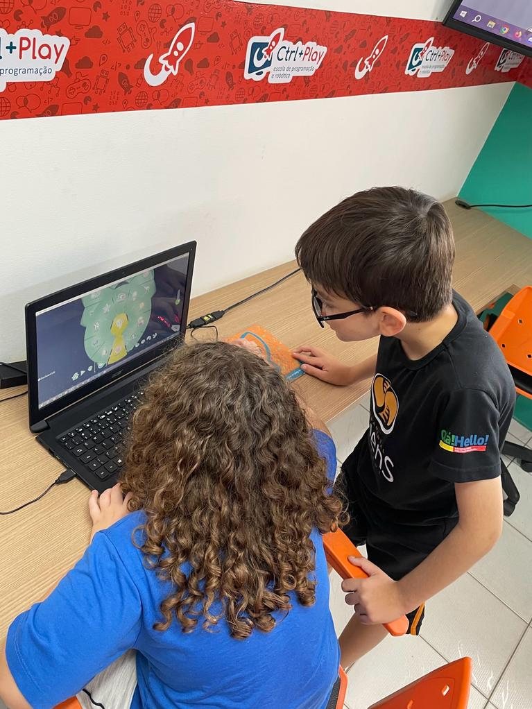
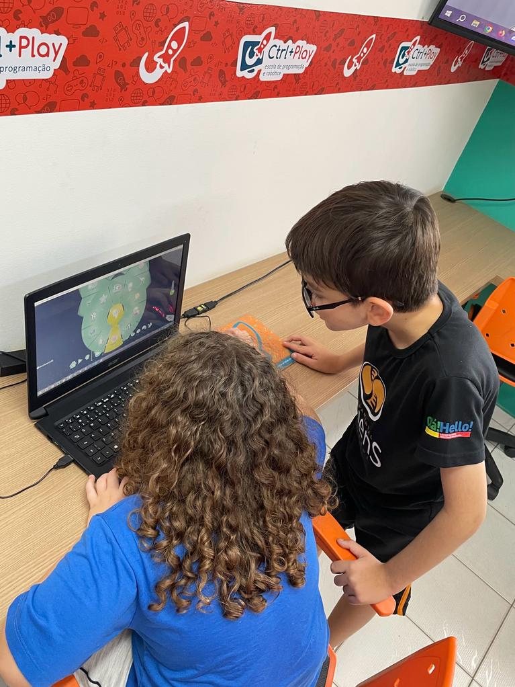

No módulo 4 do curso Ctrl+Kids, os alunos Miguel Sanches, Davi Bueno, Lorenzo Jayme, Luiz Felipe e Lucas Lima desenvolveram um projeto criativo e prático na plataforma "Kodu". Superando desafios, a equipe destacou suas habilidades em ciência da computação e técnicas de informática, resultando em um trabalho que atendeu aos requisitos do curso e evidenciou a colaboração eficaz entre os participantes. O projeto reflete o impacto positivo desses alunos na área da tecnologia.

 
